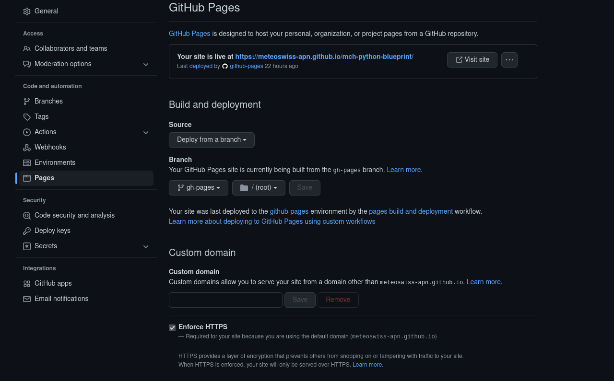

Documentation¶
Documentation template in the docs folder¶
Additionally to a initial README.rst file, the blueprint will automatically generate a folder with the following content
docs/
authors.rst
conf.py
contributing.rst
history.rst
index.rst
installation.rst
make.bat
Makefile
modules.rst
readme.rst
usage.rst
This folder is set up to build static html pages with sphinx. Some files link to the markdown files in the root directory. Special mention should be made of the file modules.rst. It contains a directive which triggers automatic documentation builds from the docstrings in your modules. Initially, only the example code is listed. If you want to auto-build from docstrings, add your modules there. To deploy your docs to GitHub-Pages, enable the feature in the settings of your repository following the example given in the following figure:
In the docs folder, there is a file (documentation.inactive), which manages the corresponding Github action. To use it, add the last line of this block at the very bottom of the file:
with:
force: true
branch: gh-pages
directory: gh-pages
github_token: ${{ secrets.GITHUB_TOKEN }}
and then move it to the other GH action workflow file
mv documentation.inactive ../.github/workflows/documentation.yaml
Note that this is an optional feature. If you repository is private, you should probably not push the documentation to Github-Pages. Likewise, if you work on a small project, you might not necessarily need this feature. If you do not need the feature, you can link individual files directly to the readme in the root directory. In this case remove sphinx from your requirements/requirements.yml file and remove the GH action (.github/workflows/documentation).